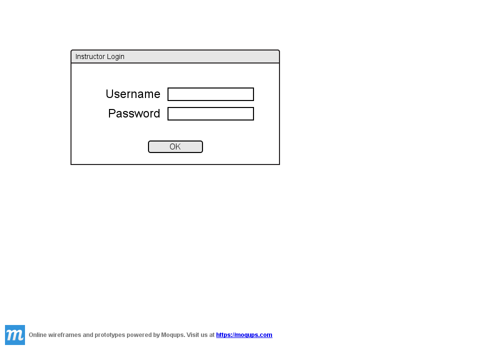
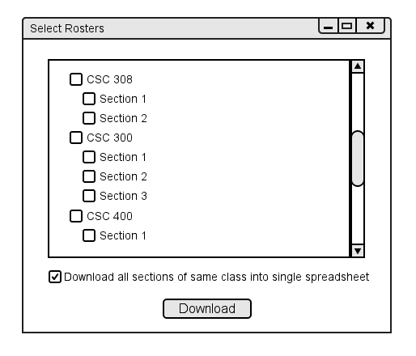
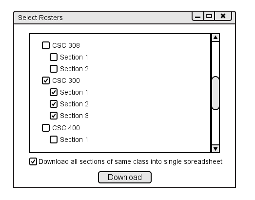
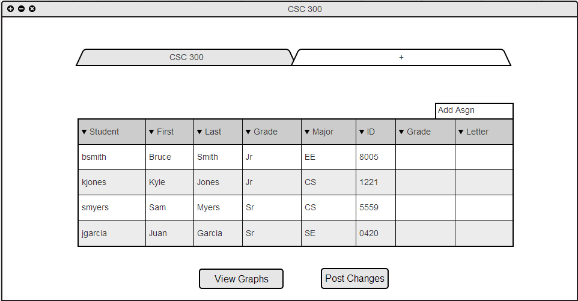
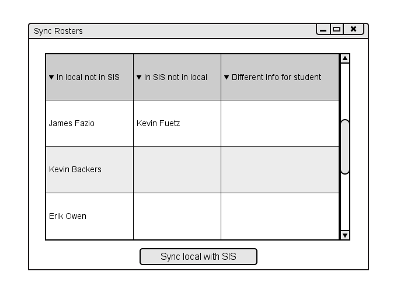

2.2.2 Download Roster
When a teacher "drives up" to the grader, they can download a roster or multiple rosters from the SIS. This serves as the basis for the gradebook from which they can add, edit, or remove students from their class rosters.
If the teacher currently has no classes in their gradebook, they are prompted to download a roster. Additionally, they can initiate this action by selecting download from the Class menu.
Before viewing available rosters to download, the instructor must authenticate. This is done with a simple username and password as shown in Figure 2.2.1 A.

Figure 2.2.2 A: Download roster authentication.
Once they have authenticated, they see the view to select rosters from. The window contains a simple tree of every class they teach. Each class has a list of available sections. If the tree extends below the window, the teacher can scroll vertically. At first, no classes or sections are checked.

Figure 2.2.2 B: Select rosters to download.
Teachers can check an individual section or check multiple sections. If they want to select all sections of a specific course, they can check the box next to the course name, as shown in Figure 2.2.1 C.

Figure 2.2.2 C: Select rosters to download checked.
Once the teacher clicks download, the main view returns with the selected rosters now added to the spreadsheet.
This view is shown below, in Figure 2.2.2 D. Notice that the spreadsheet contains students but no information about assignments
or categories has been entered yet.

Figure 2.2.2 D: Resulting spreadsheet view.
A teacher can also perform a roster sync during the middle of a term. This operation looks for three cases: students on the local roster but not the SIS roster,
students on the SIS roster, but not the local roster, and students with the same EMPLID but varying information in the SIS data and the local data.
This information displays in the form of a three column table as seen in Figure 2.2.2 E. Clicking the "Sync local with SIS" button updates local roster information with the SIS roster.
For exmaple students on the SIS roster but not the local roster add to the local roster. The other case, students on the local but not the SIS is merely for informational purposes
because the user can not make changes to the SIS, but the sync tool will alert the user of these differences.

Figure 2.2.2 E: Sync Rosters.
Prev: Create Class
| Next: Add Assignment Categories
| Up: Basic Gradebook Setup
| Top: index